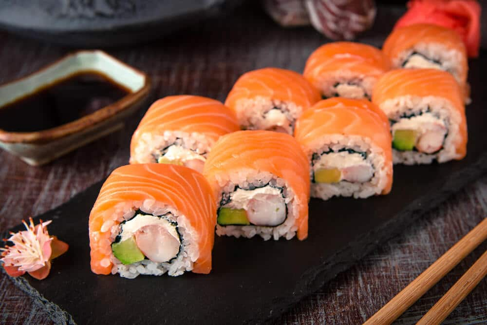

Best Salmon Roll Ever!

Philadephia Style Salmon Cut Roll
Here are the basic steps to follow to make homemade sushi. It takes a little practice, but eating your mistakes is delicious, too! You can see all the steps in action in the video that accompanies this post.
Ingredients
- Salmon
- Cucumber
- Cream Cheese
- Sushi Rice
- Seaweed
- Imitation Crab
Steps
- Cut the sashimi
- Cut the cucumber
- Lay out the seaweed
- Put the ingredients aside from the fish on the seaweed
- Roll!